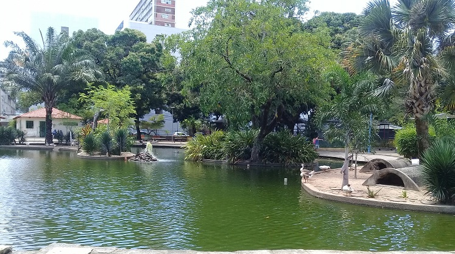
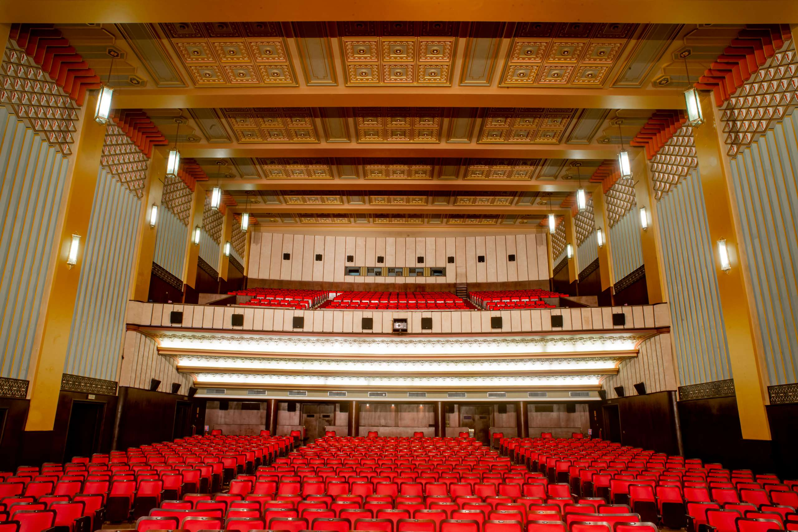

Marco Zero

Recife, uma cidade rica em história e cultura, oferece uma variedade de pontos turísticos fascinantes que revelam sua essência única. Entre esses locais, o Marco Zero se destaca como uma referência emblemática. Localizado no coração do Recife Antigo, este ponto simbólico é onde a cidade foi fundada em 1537 por Duarte Coelho Pereira. Com sua monumental bússola de mármore, o Marco Zero serve como ponto de partida para a contagem das distâncias rodoviárias em Pernambuco. Além disso, é um local vibrante para eventos culturais e sociais, oferecendo uma vista deslumbrante para o Rio Capibaribe e suas pitorescas pontes.
Parque 13 de maio
O Parque 13 de Maio, é um oásis urbano que contrasta com a agitação da cidade. Nomeado em homenagem à Abolição da Escravatura, ocorrida em 13 de maio de 1888, o parque é uma homenagem à liberdade. Oferecendo uma atmosfera serena e verdejante, é um local popular para passeios, piqueniques e atividades culturais ao ar livre. O parque abriga esculturas e monumentos que contam a história da luta pela abolição, tornando-o um local educativo e inspirador.
Cine São Luiz
O Cinema São Luiz, por sua vez, é um tesouro cinematográfico que se destaca no cenário cultural de Recife. Fundado em 1952, este cinema histórico é um marco da arquitetura art déco. Ao longo dos anos, passou por restaurações que mantiveram sua beleza original e o equiparam com tecnologia de projeção moderna. O Cinema São Luiz é mais do que apenas um local para assistir filmes; é um espaço onde a história do cinema encontra a contemporaneidade. Além de exibir filmes atuais e clássicos, o local também promove festivais de cinema e eventos culturais que enriquecem a vida artística da cidade.
Em resumo, ao visitar esses três pontos turísticos em Recife, você poderá explorar a história, a cultura e a diversidade da cidade. O Marco Zero revela suas origens, o Parque 13 de Maio celebra a liberdade e o Cinema São Luiz oferece uma experiência cinematográfica que une passado e presente. Juntos, esses locais são testemunhas da riqueza cultural de Recife e convidam os visitantes a descobrir suas histórias fascinantes.
Postagens recentes
Marco Zero
O Marco Zero se destaca como uma referência emblemática. Localizado no coração do Recife Antigo, este ponto simbólico é onde a cidade foi fundada em 1537 por Duarte Coelho Pereira.